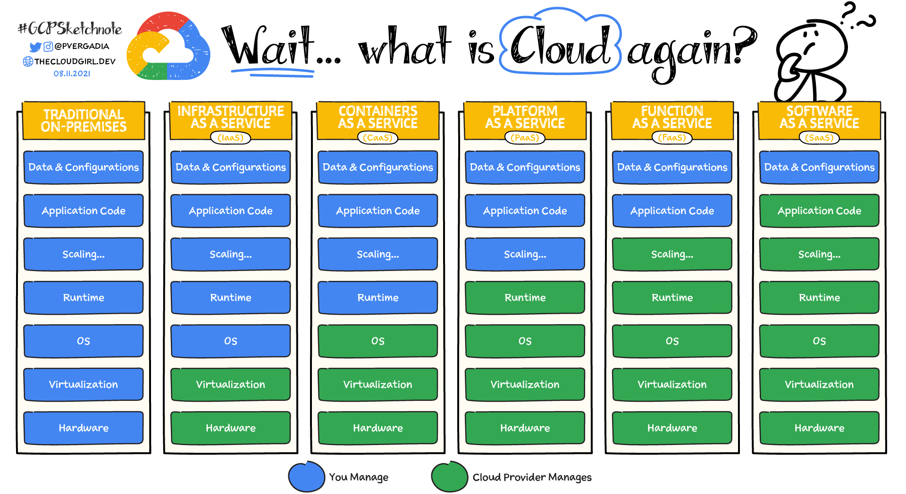

Serverless
Temas de COMPNU · 6/6
6.1 Qué es la computación serverless
Serverless no significa literalmente "sin servidores": sigue habiéndolos, pero no los gestionamos nosotros. Es la misma idea que en wireless: en alguna parte del sistema sigue habiendo cables, pero nos olvidamos de ellos.
6.1.1 IaaS, CaaS, PaaS, FaaS…
Los modelos de servicio se diferencian en qué capas gestiona el cliente y cuáles el proveedor. Serverless se corresponde sobre todo con FaaS (Function as a Service): el cliente solo aporta los datos y configuración y el código de la aplicación (en forma de funciones); el proveedor se encarga incluso del escalado.

Azul = lo gestionas tú; verde = lo gestiona el proveedor.| Capa | On-premises | IaaS | CaaS | PaaS | FaaS | SaaS |
|---|---|---|---|---|---|---|
| Datos y configuración | Tú | Tú | Tú | Tú | Tú | Tú |
| Código de la aplicación | Tú | Tú | Tú | Tú | Tú | Proveedor |
| Escalado | Tú | Tú | Tú | Tú | Proveedor | Proveedor |
| Runtime | Tú | Tú | Tú | Proveedor | Proveedor | Proveedor |
| Sistema operativo | Tú | Tú | Proveedor | Proveedor | Proveedor | Proveedor |
| Virtualización | Tú | Proveedor | Proveedor | Proveedor | Proveedor | Proveedor |
| Hardware | Tú | Proveedor | Proveedor | Proveedor | Proveedor | Proveedor |
6.1.2 Los cinco principios
- Abstracción de servidores (NoOps): hay servidores, pero no los gestionamos, actualizamos ni parcheamos.
- Basada en eventos (event driven): las funciones no están siempre en ejecución; se lanzan solo en respuesta a eventos disparadores (una petición HTTP, la subida de un fichero, un trigger de una base de datos…).
- Sin estado (stateless): las funciones viven muy poco, a veces milisegundos, así que no pueden guardar nada en memoria; cualquier dato debe persistirse en una BD externa.
- Escalado automático (scale-to-zero): sin uso, consume 0 recursos; si entran 10 000 usuarios, la nube levanta automáticamente los servidores necesarios y los apaga al terminar.
- Microfacturación: pagas por invocación y por tiempo de cómputo realmente usado, nunca por tener un servidor encendido esperando tráfico.
Analogía
Un servidor tradicional es tener coche propio: pagas seguro y garaje aunque no lo uses. Serverless es pedir un taxi: aparece cuando lo llamas, pagas solo el trayecto y si un día necesitas cien, llegan cien.
6.2 Los retos de serverless
6.2.1 El arranque en frío (cold start)
Es la latencia invisible de serverless: no depende de cuánto tarde tu código, sino de todo lo que hay que hacer para arrancarlo cuando no había ninguna instancia lista. Al llegar una petición hay cuatro fases:
- Asignación de cómputo: el proveedor busca un servidor físico libre y arranca una microVM para tu código (~100 ms actualmente).
- Descarga del código: la instancia recién creada descarga tu código (de un repositorio Git, un ZIP, una imagen de contenedor…). El tamaño importa: un paquete de 1 MB baja mucho antes que uno de 50 MB.
- Arranque del runtime: lenguajes "pesados" como Java o .NET tienen que levantar un intérprete pesado y cargar muchos componentes; lenguajes ligeros como JavaScript o Python reducen este coste, aunque sigue existiendo.
- Inicialización de la aplicación: conectar a la BD, cargar librerías, leer ficheros…
Analogía
Es como un restaurante que solo enciende la cocina cuando entra un cliente: el primero de la noche espera a que se caliente el horno (arranque en frío); los siguientes, con la cocina ya caliente, son atendidos al momento.
Para entenderlo mejor
Lambda execution environment lifecycle — documentación de AWS sobre las fases de inicialización (Init) e invocación de una función (artículo, inglés).
6.2.2 Dependencia del proveedor (vendor lock-in)
Serverless ata más a las tecnologías propias del proveedor. Muchas funciones son del tipo "cuando se cree un objeto en el sistema X, dispara la función Y y guarda el resultado en la BD Z", y X, Y y Z suelen ser servicios propietarios (AWS S3, AWS Lambda, DynamoDB…). Además, los eventos no siguen ningún estándar: cada proveedor usa su propia estructura.
La salida sería desplegar herramientas propias (MongoDB, Kafka…) en vez de las del proveedor, pero entonces se pierden las ventajas de serverless.
6.2.3 Observabilidad
Los "servidores" son efímeros: si algo falla, el servidor ya no existe y no puedes conectarte a él para ver qué pasó. Hacen falta herramientas de telemetría distribuida (OpenTelemetry), como en microservicios pero aún más complejo. Además, reproducir el entorno cloud en local para desarrollar y depurar es difícil, así que se acaba depurando en producción, con los riesgos que conlleva.
6.3 ¿Serverless, Kubernetes o monolito?
| Monolito | Microservicios (k8s) | Serverless | |
|---|---|---|---|
| Unidad | Aplicación completa | Contenedor | Función |
| Gestión | Baja (1 servidor) | Muy elevada (clúster k8s) | Nula (NoOps) |
| Escalado | Lento (clonar VM) | Rápido (nodos/pods) | Instantáneo / infinito |
| Coste | Fijo (24/7) | Elevado (infraestructura) | Variable (pago por uso) |
| Persistencia | Stateful (memoria/disco) | Stateful o stateless | Stateless |
| Caso ideal | MVP, apps simples | Enterprise, alta carga | Eventos, APIs |
6.3.1 Plataformas
Las principales plataformas serverless son AWS Lambda, Azure Functions, Google Cloud Functions, Google Cloud Run (contenedores sin servidor) y Knative (serverless sobre Kubernetes, para no depender de un proveedor).
Para entenderlo mejor
Serverless Architectures — Martin Fowler — artículo de referencia de Mike Roberts sobre FaaS, ventajas y pegas (artículo, inglés).
6.x Ideas clave
- Serverless sí tiene servidores, pero no los gestionas (como wireless con los cables). Corresponde a FaaS: tú solo aportas código y datos; el proveedor incluso escala.
- Cinco principios: NoOps, basado en eventos, sin estado (persistir fuera), scale-to-zero, microfacturación (por invocación y tiempo).
- Cold start: asignar cómputo (microVM ~100 ms) → descargar código (tamaño importa) → arrancar runtime (Java/.NET peor que JS/Python) → inicializar la app.
- Vendor lock-in: servicios propietarios (S3, Lambda, DynamoDB) y eventos sin estándar.
- Observabilidad difícil: servidores efímeros, OpenTelemetry, depuración en producción.
- Comparativa: monolito (MVP, coste fijo), microservicios/k8s (enterprise, gestión alta), serverless (eventos y APIs, pago por uso).
- Plataformas: AWS Lambda, Azure Functions, Google Cloud Functions, Cloud Run, Knative.